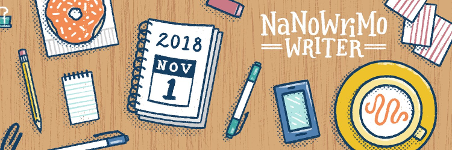

Trying NaNoWriMo a third time!
Hi! So I am trying my hand at NaNoWriMo again this year! I am officially participating in NaNoWriMo 2018, or "National Novel Writing Month." This means, by November 30, 2018, I will have written a 50,000-word novel.
